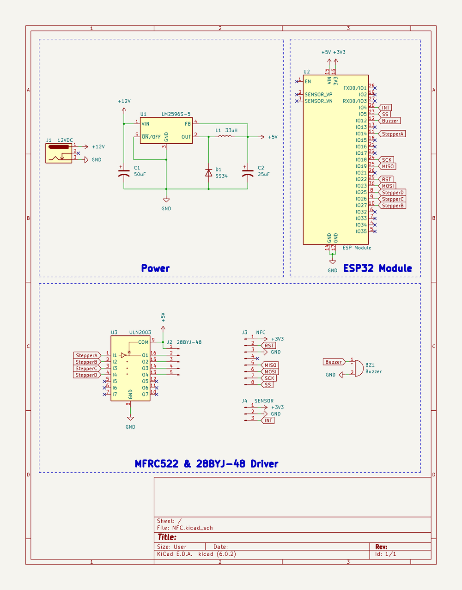
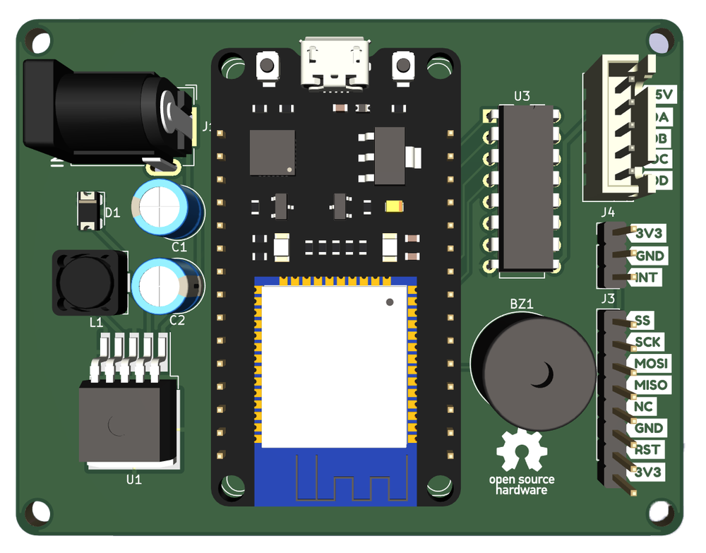
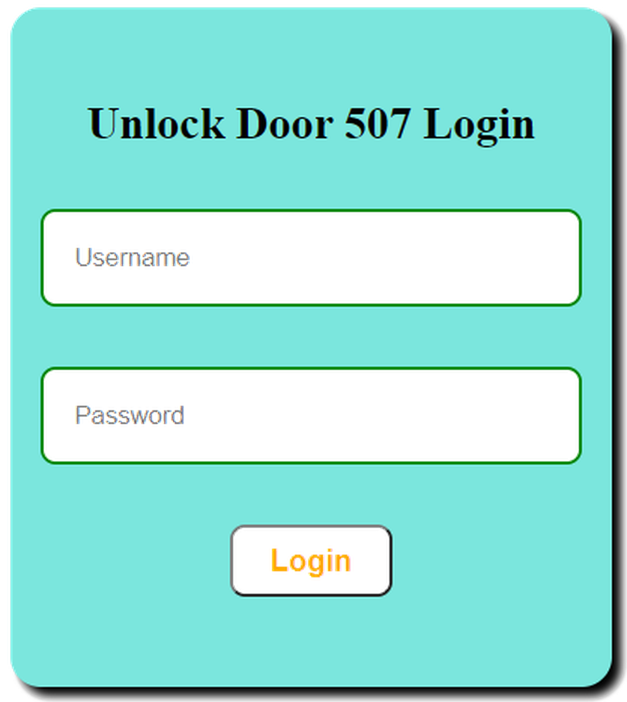
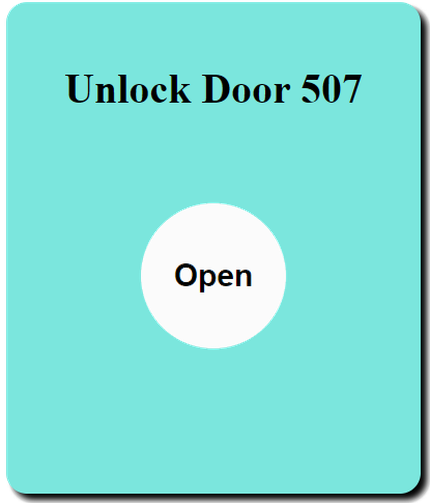

第二章——目前门禁版本
1. 原理图及PCB
这个版本我画了PCB，大家可以到我的这个Github仓库下载Gerber文件进行PCB打样。
原理图如下：

PCB三维示意图如下：

2. 项目文件及代码
下面我简单介绍一下项目文件。
该项目的文件结构如下:
- RFID_ESP32.ino
- WIFI_WS.h
- data
- favicon.png
- index.html
- index.js
- login.html
- style.css
其中RFID_ESP32.ino包含了主要的控制代码，WIFI_WS.h主要是有关包含了有关WIFI服务器和websocket的配置，而data文件夹就是网页服务器相关的文件了。
关于示例代码，我也建议大家前往我的Github仓库下载参考，因为这个项目相对来说比较大，代码量相对来说比较多，同时还有网页设计，服务器搭建等等，大家量力而行。
同时，这个项目因为需要把网页内容上传到到ESP32中，需要使用到SPIFFS(SPI Flash File Storage)技术，关于ESP32的SPIFFS大家可以参考以下内容:
Install ESP32 Filesystem Uploader in Arduino IDE
如果你不使用WIFI，那么可以把有关WIFI的内容删掉。
在这边我强调几点重要的地方。
2.1 第一点
首先为了安全，我在Arduino的库文件夹下创建了arduino_secrets的文件夹，里面有一个arduino_secrets.h的文件，我在里面定义了几个重要的变量，包括办公室网络名，网络密码，默认用户名，默认用户密码：
const char* ssid = "STAS-507";
const char* password = "dinghao666";
const char* login_user = "admin";
const char* login_pwd = "dinghao666";
当然你也可以将这些变量直接定义在项目文件里。
2.2 第二点
你可以通过更改WIFI_WS中WIFI_Init函数里面以下几行来设置你的ESP主机名，这也是http://unlockdoor-507的由来：
// change hostname to unlockdoor-507
String hostname = "unlockdoor-507";
WiFi.mode(WIFI_STA);
WiFi.config(INADDR_NONE, INADDR_NONE, INADDR_NONE, INADDR_NONE);
WiFi.setHostname(hostname.c_str());
2.3 第三点
由于这个项目跨度比较长，而Arduino的MFRC522.h库也在不断地改进和完善，目前的版本使用起来更加简单了，但是还是兼容旧版本的。新版本能够直接读取门禁卡数据，解码成4个8位的数据，因此我用数组存储每张卡的信息。
如下：
const uint8_t UID[][4] = {
{0xF1, 0x41, 0x01, 0x5F}, {0x01, 0x5E, 0x95, 0x2B}, {0x1A, 0xFD, 0xA5, 0x21}, {0xE1, 0xD8, 0xFC, 0x5E}, {0xE1, 0xE0, 0x00, 0x5F},
{0xD1, 0x7E, 0xFF, 0x5E}, {0x21, 0xDE, 0x01, 0x5F}, {0xD1, 0x3A, 0xF6, 0x5E}, {0x31, 0xAB, 0xFD, 0x5E}, {0x21, 0x35, 0xF7, 0x5E},
{0x0A, 0x57, 0x80, 0x1C}, {0xFA, 0x5D, 0x70, 0x7F}, {0xD2, 0xAA, 0x1C, 0x3E}, {0x15, 0x4F, 0xB9, 0xE5}, {0x75, 0x89, 0xB6, 0xE5},
{0x0A, 0x8C, 0x36, 0xB6}, {0x00, 0x69, 0x0F, 0x93}, {0x75, 0x89, 0xB6, 0xE5}, {0xFA, 0x50, 0x35, 0xB6}, {0xEA, 0xB1, 0x1C, 0x3E},
{0x60, 0xDB, 0x0D, 0x93}, {0x5A, 0x32, 0x34, 0xB6}, {0x72, 0xB1, 0x85, 0x44}, {0xA3, 0xA4, 0x1B, 0x3E}, {0x0C, 0x3C, 0x1A, 0x3F},
{0x72, 0xB1, 0x85, 0x44}, {0x50, 0xDF, 0xD3, 0x03}, {0xA5, 0x72, 0x1B, 0x3E}, {0xA1, 0xC2, 0x53, 0x74}, {0x6C, 0xAE, 0x73, 0x17},
{0x0A, 0x46, 0x95, 0x1C}, {0x47, 0x25, 0x38, 0xE1}, {0xDC, 0x53, 0x14, 0x3E}, {0x80, 0x54, 0x0C, 0x93}, {0x2A, 0x76, 0x64, 0x21},
{0xDC, 0xFB, 0x0E, 0x3F}, {0x5A, 0x20, 0x4C, 0x2D}, {0x3A, 0x79, 0x4E, 0x2D}, {0x08, 0x82, 0xDB, 0x28}, {0x37, 0xF1, 0x20, 0xB3},
{0x7A, 0xD7, 0x4F, 0x2D},
};
你可以通过仓库的另外一个RFID_READ程序读取新卡的信息，然后复制到到上面的数组中就可以了。
3. 使用方法
目前的门禁是由ESP32作为核心，仍然使用MFRC522扫描门禁卡，使用步进电机来开门，用蜂鸣器作为提示音，同时使用避障传感器触发中断，兼有WIFI功能。
当有人靠近NFC时会触发中断，然后MFRC522检测是否有门禁卡，如果该门禁卡是内部存储的卡则开门，并伴随两声短促的蜂鸣器声音；没有则不开门，同时蜂鸣器发出两声较长的声音。
你也可以通过WIFI，访问ESP32的内部服务器。在连接办公室网络的情况下，你可以通过http://unlockdoor-507进行访问，unlockdoor-507是ESP32的主机名。进入网页的时候需要进行身份验证，默认的用户名是admin，默认密码dinghao666。

登录成功后点击open就可以开门了。
